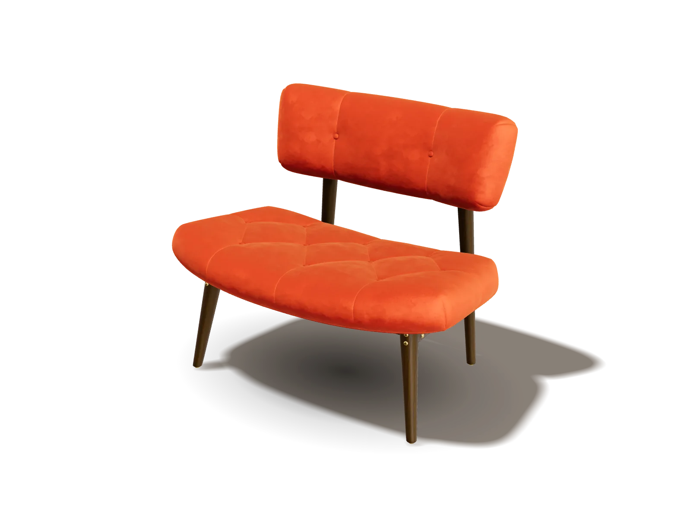

La duda del color
El terciopelo cambia con la luz. El botón «Ver el tejido» acerca la cámara a la fibra para que el cliente vea el brillo real antes de pagar, que es donde nace el «no era el color que esperaba».
Demo de Ramiro Bales · Ámbar Muebles es una marca ficticia creada para esta demo.Demo · marca ficticia
← Volver al portfolio
Cargando el modelo 3D…
Vista fija: tu navegador no muestra 3D aquí. Las opciones cambian el precio y el carrito; la imagen muestra la versión de catálogo.
Arrastrá para girar
Terciopelo, de cerca
El brillo de la fibra (sheen) cambia con el ángulo de la luz: girá un poco para verlo moverse.
LivingButacas
Terciopelo con capitoné, estructura de madera maciza y botones de metal.
US$ 540
Precio de ejemplo con la configuración elegida.
83 × 57 × 69 cm (ancho × profundidad × alto), tomadas del modelo 3D.
Marca ficticia: no hay pago ni envío.
01Qué gana la marca
Una foto muestra un ángulo; esta ficha muestra todos, con la tela y el acabado que el cliente eligió. Las cifras de abajo las publicaron terceros sobre tiendas que ya usan 3D: no son resultados de esta demo.
Conversión, hasta
2×
en fichas de producto con 3D y realidad aumentada.
Devoluciones, hasta
−40 %
cuando el cliente ve el producto en 3D o AR antes de comprar.
Agregar al carrito
+44 %
al interactuar con modelos 3D (caso Rebecca Minkoff).
Prefiere 3D a video
95 %
de los compradores elige una vista 3D interactiva antes que un video del producto.
El terciopelo cambia con la luz. El botón «Ver el tejido» acerca la cámara a la fibra para que el cliente vea el brillo real antes de pagar, que es donde nace el «no era el color que esperaba».
6 telas × 4 maderas × 3 metales: 72 versiones de la butaca y 112 del sofá, sin una sola sesión de fotos. Una tela nueva es una línea más en el catálogo.
El total cambia con cada elección y la configuración entra al carrito como una línea de pedido con su precio: la misma información que necesita el depósito.
02Cómo se integra
El GLB sale del catálogo de la marca (muchos fabricantes ya lo tienen para sus renders) o se modela una vez por producto.
Menos de 2 MB por producto: texturas WebP, geometría cuantizada y un solo entorno de estudio. Esta butaca pesa 1,13 MB y el sofá 0,51 MB.
Un componente que va donde hoy está la galería de fotos. Sin plugin ni app: corre en el navegador del celular y de la computadora.
Cada opción es una variante del SKU. Al agregar, la configuración viaja como línea de pedido con su precio, igual que una talla o un color.
El mismo modelo abre en realidad aumentada en Android (glTF) y, con una copia USDZ, en iPhone, para verlo en el living. Según Shopify, la AR aumentó la probabilidad de compra un 65 %.
Medido por mí en esta página con Edge sin ventana y GPU integrada, caché vacía. Con 4G lento (1,6 Mbps) el póster aparece a los 2,2 s y el 3D a los 10,6 s.
03Proceso a la vista
Una ficha de muebles donde el cliente elige tela, madera y metal y ve el resultado en 3D con luz de estudio, con el precio siempre a la vista. Criterios de aceptación: que el terciopelo se vea terciopelo, que la primera vista pese menos de 2,5 MB, que se use con un dedo o con el teclado y que no gaste batería cuando nadie la toca.
La construí con desarrollo asistido por IA: yo definí el brief, los criterios y las decisiones de abajo, y verifiqué cada versión con capturas a resolución real y mediciones.
El terciopelo depende del ángulo.
Descarté una foto de muestra de tela: no muestra cómo cambia con la luz.
Una ficha no es una escena.
Descarté la escenografía de living y el posprocesado: suman peso y le quitan protagonismo al producto.
La batería del celular también es experiencia.
Descarté el bucle continuo a 60 cuadros por segundo con la imagen quieta.
| Pieza | Peso |
|---|---|
| Motor 3D (three.js + cargadores) | 202 KB |
| Modelo de la butaca (GLB) | 1.135 KB |
| Entorno de estudio (HDR 512 px) | 410 KB |
| Tipografías | 109 KB |
| Página, estilos, código y póster | 160 KB |
| Total | 2,0 MB |
El sofá (0,51 MB) se descarga sólo si el cliente lo elige. Para bajar de 1,55 a 1,13 MB el modelo de la butaca, cuanticé la geometría y quité una etiqueta interna que no se ve.